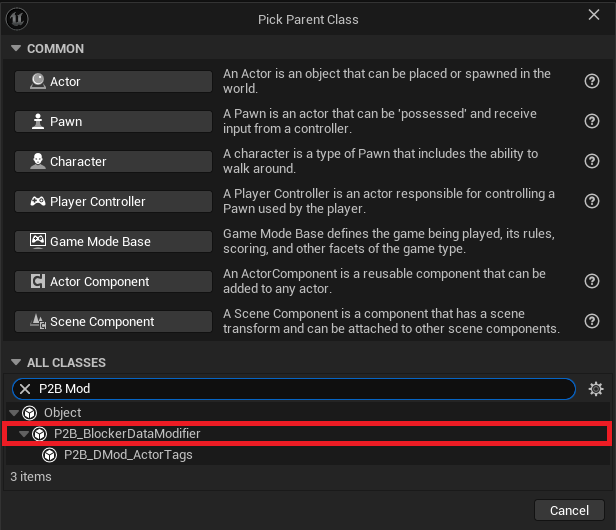
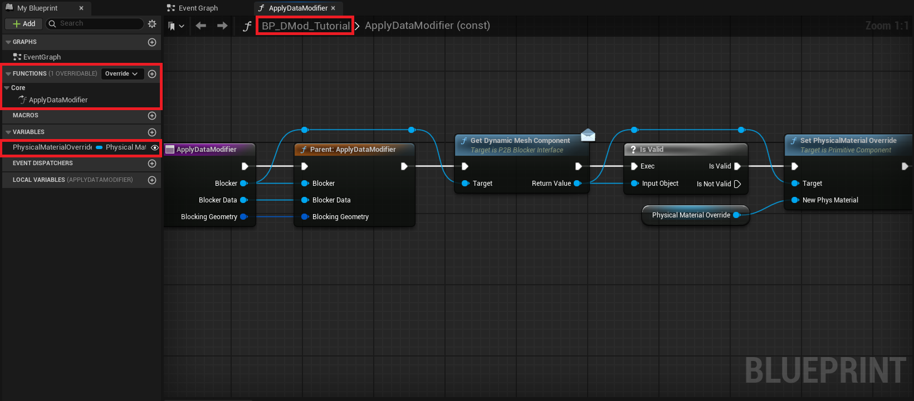
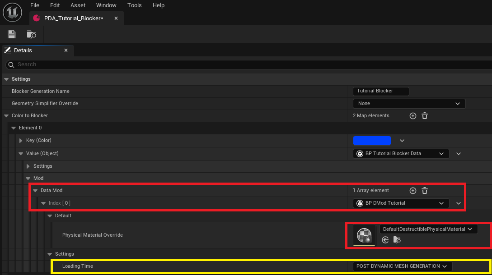
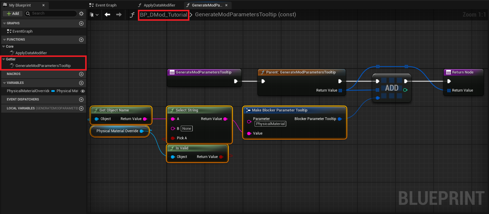
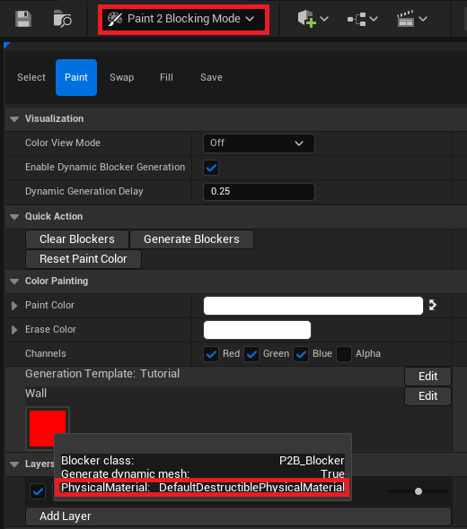

Blocker Data Modifier
Blocker Data Modifier can be created in both C++ and Blueprint. This tutorial will describe only the Blueprint implementation.
Once you understand Blueprint, implementing it in C++ should be straightforward.
Create Blocker Data Modifier
The Blocker Data Modifier is here to soften the custom blocker process and allow generic code for multiple Blocker. It'll be applied
during the construction and work with an actor. The modifier will then be able to cast, get components, and call interfaces to change the
instantiated Blocker.
To begin with, let's create a P2B_BlockerDataModifier blueprint. Let's call it BP_DMod_Tutorial.

Open the blueprint and override the ApplyDataModifier function. It'll be called during the generation depending on the LoadingTime value.
Before adding any nodes, create a new variable PhysicalMaterialOverride of type PhysicalMaterial.
Then, you can add these nodes:
- Call the parent
GetDynamicMeshComponentfrom the blocker (it's an interface call)- Check if it's a valid object
- Call
SetPhysicalMaterialOverride

Now that the Modifier is ready, you can add it to any blocker Data Asset in the Mod section. You will see the variable you created and
another one called Loading Time that will define when the Modifier will be applied to the blocker. Three different times exist:
PreDynamicMeshGenerationThe modifier will be applied before generating theDynamicMesh.PostDynamicMeshGenerationThe modifier will be applied after generating theDynamicMesh.OnSpawnFinishedThe modifier will be applied when the actor has finished itsDeferredSpawn.

Custom Tooltip
As with the Blocker Data, the Modifiers can add custom Tooltips to the Paint2BlockingMode. To do so, open the BP_DMod_Tutorial and override
the GenerateModParametersTooltip, then add the following nodes:
- Call the parent
- Add a new element
- Create a
BlockerParameterTooltipstruct and fill it with your values - Return the
Tooltiparray

You can now open the Paint2BlockingMode and see that the blockers implementing the BP_DMod_Tutorial have a tooltip displaying the information you
provided.

Documentation built with Unreal-Doc v1.0.9 tool by PsichiX